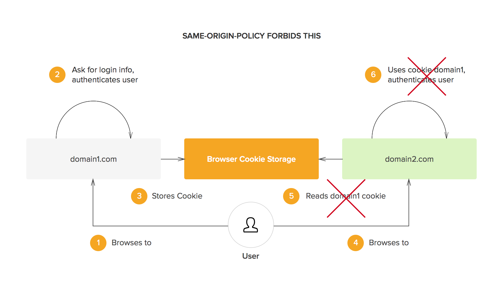
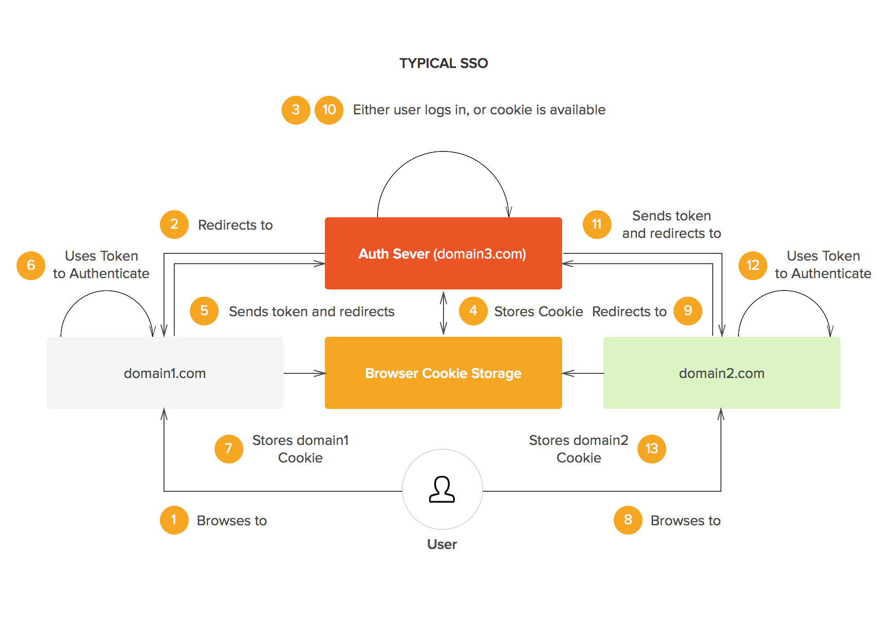
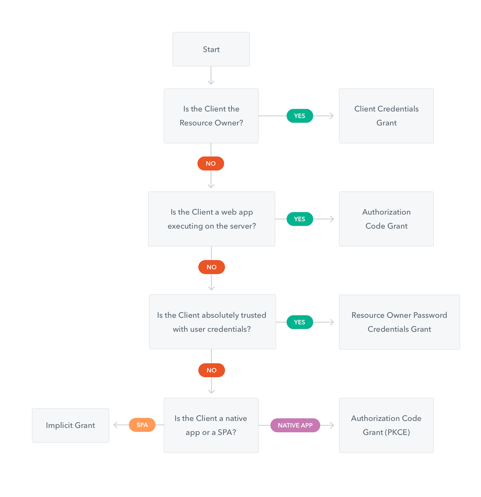

Authentication & Authorization Basic¶
Authentication and Authorization are two relevant but different concepts, which causes confusion sometimes. Both of them are important for SaaS solution. This blog explains the basic of these two concepts.
Single sign on¶
In classic intranet scenarios, normally windows authentication will be used in intranet scenario. All parties belong to Active Directory which makes things easy.
However, in a micro services scenario the authentication becomes a challenge.
- Method of allowing users access to all resources they need within an environment with a single username and password
- Negates having to remember multiple usernames and passwords
- Mitigates risk by keeping users from writing down credentials
- Easier to manage and allows for centralized control over password changes
An obvious solution to achieve SSO is to share session information, however it is impossible due to same origin policy.
Token service¶
Normally a centralized token service can help to achieve SSO.
Token service encrypt token by using private key, and the client decrypt by using public key
Token service endpoints:
- Authorize
- Token
- Userinfo
- Discovery
- End session
- Introspection
- Revocation
Other endpoints:
- Authorization endpoint: used by the client to obtain authorization from the resource owner via user-agent redirection
- Token endpoint: used by the client to exchange an authorization grant for an access token, typically with client authentication
- Redirection endpoint: used by the authorization server to return responses containing authorization credentials to the client via the resource owner user-agent
Normally OpenID Connect (OIDC) is used for Identity issue.
Token¶
Purpose of a security token
- Security tokens are (protected) data structures
- A client requests a token
- An issuer issue a token
- A resource consumes a token
- has a trust relationship with the issuer
Normally, a token:
- Contain information about issuer and subject (claims - property on the identity)
- Signed (tamper proof & authenticity)
- Typically contain an expiration time
- Contain header: metadata, algorithms & keys used
Protocols¶
SAML 1.1/2.0
- XML based
- many encryption & signature options
- very expensive
Simple Web Token (SWT)
- Form/URL encoded
- symmetric signatures only
JSON Web Token (JWT)
- JSON encoded
- symmetric and asymmetric signatures (HMACSHA256-384, ECDSA, RSA)
- symmetric and asymmetric encryption (RSA, AES/CGM)
- (the new standard)
SAML is very secure and advanced, which requires XML protocol. Most mobile devices do not have this.
Simple Web Token use symmetric algorithm, which is too simple.
JWT is in-between, and on its way to official standardization. http://self-issued.info/docs/draft-ietf-oauth-json-web-token.html
Token types¶
Refresh Token:
- A token to renew the access token
- User doesn’t have to re-authenticate
- Longer expiration time than access token
Bearer Token & Reference token
- Self-contained access token, once it is sent to the client, there is no way to revoke
- If the machine is stolen, then the token can be used until it is expired
- Reference token can fix the above issue
For the details, see here: https://auth0.com/docs/tokens
OAuth 2.0¶
Oauth 2.0 is about authorization. The standard doesn’t say anything about the user. It means Oauth only cares about resource scope and not identity scope.
Oauth does not build on SSL transportation protocol. Oauth2 has many variation, big players have their own implementations.
From web, mobile and desktop application
- Different types of applications require different means to achieve authorization
- Where can the token be delivered to
- Can the client application safely store secrets
The main actors¶
- User (resource owner): An entity capable of granting access to a protected resource
- Client: An application making protected resource requests on behalf of the resource owner and with it authorization
- Resource server: The server hosting the protected resources
- Authorization server: The server issuing access tokens to the client after successfully authenticating the resource owner and obtaining authorization
Client has two types:
- Confidential client: Clients capable of maintaining the confidentiality of their credentials, e.g. MVC application
- Public client: clients incapable of maintaining the confidentiality of their credentials, e.g. native mobile applications and javascript applications
Flows¶
OAuth 2.0 supports several different grants. By grants we mean ways of retrieving an Access Token. Deciding which one is suited for your case depends mostly on your Client’s type, but other parameters weigh in as well, like the level of trust for the Client, or the experience you want your users to have.
See details here: https://auth0.com/docs/api-auth/which-oauth-flow-to-use
Principles¶
Transitive Trust¶
Enabling authentication based on authenticating to a trusted third party
- User logs into site “A” using their Google or Facebook credentials
- Both user and site “A” trust Google or Facebook, so site “A” accepts the authentication
Security concerns come into play if the trusted site is compromised
- Hacker could potentially access any sites or applications that use the third party credentials for access
- Understand what 3rd party trusts you allow / evaluate how security and potential risks
Trusts that exist between domains or companies
- One-way Trust: A trusts B/ B doesn’t trust A
- Two-way Trust: A trusts B/ B trusts A
- Non-transitive Trust: A trusts B but doesn’t allow that trust to extend
- Transitive Trust: A trusts B, B trusts C, so A trusts C
Authorization principles¶
In general, authroization needs to be:
- Least privilege
- Separation of duties
- ACLs
- Mandatory access (pre-defined set of capabilities and access to information e.g. who can share what to who)
- Discretionary access (allow users to dynamically share information with others)
- Rule-based access control
- Role-based access control
- Resource-based access control (between gray area with business logic)
- Time of day restrictions
Authorization is application specific, which is one of the reason do not combine authentication and authorization.
- Introduce Authorization Provider
- Authorization provider need to have an Admin UI
- Authorization provider is to map identity to permission
Written by Binwei@Oslo